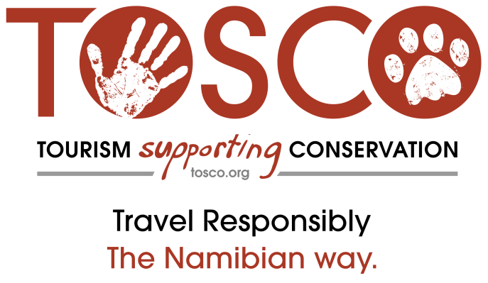
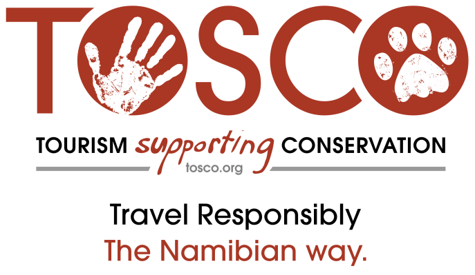
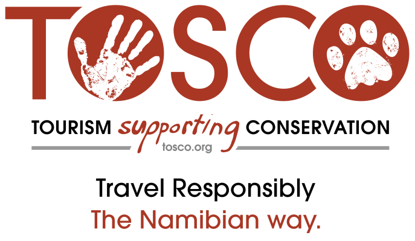

Partners and Friends
 



Is based in Windhoek, the capital of Namibia, and we are the country’s first and only Permaculture NGO. Our young and dynamic team has a fresh and unique approach to tackling environmental and socio-political problems that still persist, and are worsening, in Namibia after 27 years of independence. We believe that all Namibians can benefit from taking part in shaping their environment to become more abundant and resilient in the wake of great environmental and economic challenges. We are passionate about working on projects addressing urban food security, community education, environmental awareness and sustainability.
Eloolo Permaculture Initiative endeavours to improve human ecosystems to become healthy and abundant, guided by our ethics of care for the people, care for the earth and fair share.
Our vision is for people to live in healthy communities based on resilient food systems.
'Eloolo' means 'abundance' in Oshivambo, the language of Namibia's largest ethnic group.
